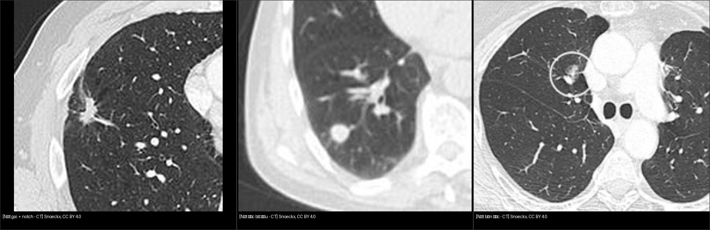
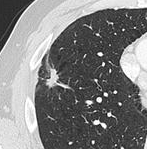

020 — Nốt phổi / Pulmonary nodule
Tags: pattern:not vung:phoi score:Lung-RADS protocol:Fleischner incidentaloma:not-phoi
Mức chắc chắn (certainty): tổng hợp y văn (literature synthesis) — nhóm tự biên từ y văn mở (Fleischner 2017, Lung-RADS), chưa gắn ca nguyên văn đơn lẻ.
1. Tổng quan — nốt là gì, vì sao phải theo dõi
- Nốt phổi (pulmonary nodule): tổn thương tròn/mờ ≤ 30 mm; > 30 mm gọi là khối (mass), nguy cơ ác cao hẳn. Phân 3 dạng: đặc (solid), bán đặc (part-solid) (nhân đặc + quầng kính mờ (ground-glass)), kính mờ thuần (pure ground-glass).
- Ngưỡng định lượng nhớ nằm lòng: mỡ trong hamartoma −40 đến −120 HU (đo ở cửa sổ trung thất); nhân đặc trong nốt bán đặc ≥ 6 mm là ngưỡng hành động (Lung-RADS 4A); thời gian nhân đôi thể tích (VDT) ác tính điển hình 20–400 ngày (< 20 ngày nghĩ viêm; nốt bán đặc lepidic có thể chậm hơn nhiều; hạch trong phổi cũng có VDT trùng ác tính).
- Số liệu hình thái (Snoeckx 2018): gai (spiculation) giá trị dự báo dương tới 90%; nhưng 21–33% nốt ác vẫn bờ nhẵn — bờ đều không loại trừ ung thư; vôi hóa trong SPN ác chỉ ~2% (ung thư phổi nói chung tới 13%); PET-CT hạn chế khi nốt < 8 mm, adenocarcinoma lepidic, carcinoid (bắt thuốc thấp/âm tính giả).
- TẠI SAO hình thái quyết định: gai (spiculation) = mô u xâm lấn mô kẽ (desmoplasia) kéo co; quầng kính mờ = lan theo vách phế nang (lepidic) của adenocarcinoma; vôi hóa (calcification) dạng bỏng ngô (popcorn) = hamartoma lành; mỡ (fat, HU âm) trong nốt = hamartoma.
- 2 câu hỏi mọi nốt: (1) đặc điểm ác tính? (2) bệnh nhân nguy cơ cao? (hút thuốc (smoking), tuổi, tiền sử ung thư (cancer history), phơi nhiễm).
2. Gamut theo vị trí + hình thái
- Ngoại vi/màng phổi (peripheral/subpleural): u hạt (granuloma) lao/nấm, viêm khớp dạng thấp (rheumatoid nodule), nhồi máu (infarct), ung thư nguyên phát.
- Trung tâm/quanh phế quản: di căn (metastasis — nhiều nốt 2 bên, đáy phổi), lao, sarcoidosis (theo bó mạch-phế quản).
- Bờ gai + notch + co kéo màng phổi (pleural tag): ác tính; bờ nhẵn + vôi hóa trung tâm/lớp (central/laminated) + ổn định ≥ 2 năm: lành tính.

Trái: nốt gai + notch. Giữa: nốt đặc bờ đều. Phải: nốt bán đặc (chi tiết từng ca xemimages/CREDITS.md). Nguồn: Snoeckx et al., CC BY 4.0. Ảnh ghép letterbox.
3. Bảng so sánh phân biệt
| Thực thể (entity) | Hình ảnh điển hình (CT cửa sổ phổi) | Chốt vào (rule-in) | Chốt loại (rule-out) | Gợi ý xác nhận |
|---|---|---|---|---|
| Ung thư nguyên phát (primary lung cancer) | Đặc/bán đặc, gai + notch + co kéo màng phổi, lớn dần | Gai rõ + lớn lên ở lần chụp sau | Vôi hóa bỏng ngô/mỡ trong nốt → hamartoma | PET-CT (SUV cao), sinh thiết |
| U hạt lao/nấm (granuloma) | Nhỏ, bờ đều, vôi hóa trung tâm/lớp, vệ tinh (satellite) | Vôi hóa đặc + ổn định ≥ 2 năm | Lớn nhanh, gai mới xuất hiện | Tiền sử lao, IGRA |
| Hamartoma | Vôi hóa bỏng ngô và/hoặc mỡ trong nốt | Mỡ (HU âm) hoặc vôi hóa bỏng ngô | Không có 2 dấu trên → đừng chốt hamartoma | CT lát mỏng đo HU |
| Di căn (metastasis) | Nhiều nốt 2 bên, đáy phổi, kích thước đa dạng | Tiền sử ung thư ngoài phổi + nốt nhiều | Nốt đơn độc không tiền sử → nghĩ nguyên phát/u hạt | So sánh phim cũ, toàn thân |
| Viêm (infection/inflammation) | Quanh phế quản, kính mờ, halo | Sốt + tan sau kháng sinh | Tồn tại > 3 tháng không đổi → không còn là viêm cấp | CT lại 3 tháng |
4. Protocol + Fleischner & Lung-RADS
- Phát hiện: CT ngực liều thấp lát mỏng (≤ 1,5 mm), cửa sổ phổi; đo đường kính trung bình 2 chiều. So sánh phim cũ là bước giá trị nhất.
- Fleischner 2017 (nốt tình cờ, BN ≥ 35 tuổi, không ung thư/không suy giảm miễn dịch). Nốt đặc: < 6 mm nguy cơ thấp → không theo dõi thường quy; < 6 mm nguy cơ cao → CT 12 tháng (ổn định thì dừng); 6–8 mm → CT 6–12 tháng rồi 18–24 tháng; > 8 mm → CT 3 tháng + PET-CT/sinh thiết. Nốt bán đặc/kính mờ ≥ 6 mm: CT 3–6 tháng rồi hàng năm tới 5 năm (tiến triển chậm, đánh giá nhân đặc chứ không chỉ kích thước):
flowchart TD
A[Nốt đặc tình cờ] --> B{Kích thước + nguy cơ?}
B -->|"<6mm, nguy cơ thấp"| C[Không theo dõi thường quy]
B -->|"<6mm, nguy cơ cao"| D[CT 12 tháng, xem ổn định thì dừng]
B -->|"6-8mm"| E[CT 6-12 tháng rồi 18-24 tháng]
B -->|">8mm"| F[CT 3 tháng + PET-CT/sinh thiết]
G[Nốt bán đặc/kính mờ] --> H[Theo dõi dài 3-5 năm vì tiến triển chậm]
- Lung-RADS (sàng lọc BN nguy cơ cao, LDCT hàng năm): 1–2 âm tính/lành → sàng lọc tiếp; 3 (nghi ngờ nhẹ, vd nốt đặc ≥ 6–<8mm) → CT 6 tháng; 4A/4B/4X (nghi ngờ, càng cao càng ác) → PET-CT/sinh thiết. Ghi rõ phiên bản khi kết luận.
5. Biến thể bình thường và cạm bẫy
- Hạch trong phổi (intrapulmonary lymph node): nốt dưới màng phổi, dẹt, có rãnh — lành tính, hay gặp đáy phổi.
- U hạt vôi hóa sau lao: đừng đốt PET-CT vô ích khi đã ổn định 2 năm.
- Giả nốt: núm vú, mạch máu cắt ngang (đổi lát xem cuống mạch — vessel continuity), xẹp đĩa nhìn chếch.
- Sai lầm lớn nhất: không so phim cũ; đo khác lát cắt rồi kết luận "lớn lên".
6. Tự lượng giá — Blind Quiz
Ca 1 — Nam 61 tuổi, hút thuốc nặng, nốt 15mm thùy trên phải tình cờ. Mô tả trước khi mở đáp án.

- Hỏi: bờ nốt thế nào? Có notch không? Hạch cạnh khí quản? 3 phân biệt + chốt?
Bấm để hiện đáp án
- Dấu hiệu: nốt đặc 15mm, bờ gai (spiculation) + notch rõ, hạch cạnh khí quản (paratracheal) to.
- Chẩn đoán: nghi ác cao — mô bệnh gốc: ung thư phổi tế bào nhỏ (SCLC) (Fig. 10, Snoeckx 2018 — giữ nguyên chú thích gốc, đã đối chiếu PMC5825309).
- ⚠️ Phản biện: SCLC ngoại vi đơn độc 15 mm là không điển hình (SCLC ~90% trung tâm, khối lớn + hạch sớm). Gặp nốt gai ngoại vi, xác suất trước kiểm vẫn là NSCLC (adeno/SCC) — mô bệnh mới quyết định, không đoán mô bệnh từ hình thái.
- Nguồn: Snoeckx et al., Insights into Imaging 2018, CC BY 4.0.
Ca 2 — Đối chiếu: mở composite_not-ba-dang.jpg ở mục 2, xếp 3 nốt theo nguy cơ tăng dần rồi đối chiếu bảng mục 3.
Bấm để hiện đáp án
- Nguy cơ tăng dần: nốt đặc bờ đều < nốt bán đặc < nốt gai + notch. Lưu ý: nốt bờ đều vẫn ác được (ca SCC 15mm) — bờ đều không loại trừ ung thư.
Bài liên quan chéo
Không dùng để chẩn đoán độc lập khi chưa có người hướng dẫn.